The thread never runs outand the thing runs
Four changes. The red thread is no longer a budget: it pays out as far as she goes, and what used to eat yarn now frays the doll. Ten poles from the Ink Mere down are gone, so the deep has longer stretches between safe points. Nine of the ten skeins are now letters in the knitter's hand. Seats mend her and keep the moths off, and the first time she sits at each one she notices something there. In the bitten ending, the thing screams and runs at once, two screens show the thread going grey, and then it tries the well and falls.
All route checks pass. The whole-game bot reaches the choice in both modes (plain: 7.7 and 8.0 min on two seeds; frayed: 7.7 min; 4 deaths each run).
let's just remove the mechanics of thread being finite
Do numbers 2, 3, 5
Ten poles are taken out of the game. They are not drawn and can't be tied to, but their numbers are kept, because saves and code refer to them. A save already sitting at one of them carries on from it. The climb in the Loom is untouched: the chase there is tuned per pole. The times below are from your last full run, added together for each new stretch.
| Pole removed | Where | Now one stretch | Your time |
|---|---|---|---|
| 10 | Hall of Chairs, west | 9 → 13 | 8.7 s |
| 31 | the Weighing Room | 13 → 32 | 14.4 s |
| 33 | the Pews | 32 → 34 | 13.7 s |
| 14 | H1 | 34 → 35 | 10.4 s |
| 36 | past the Slabs' door | 35 → 37 | 15.0 s |
| 16 | the Hush, H3 east | 15 → 17 | 11.8 s |
| 21 | start of the heddle corridor | 20 → 22 | 12.4 s |
| 29, 39 | the well ledge, before the bobbin's lane | 22 → 40 | 24.2 s |
| 43 | before the last ring | 42 → 23 | 15.6 s |
A full run now ties the thread about 34 times instead of 44. The thorny Pin Walk (pole 37) and the Hush's west end, where you died before, keep their poles. The bot treats a leg that ended at a removed pole as part of the next leg, and all the checks pass.
Leave just one yarn for collectible and replace the other ones with something else
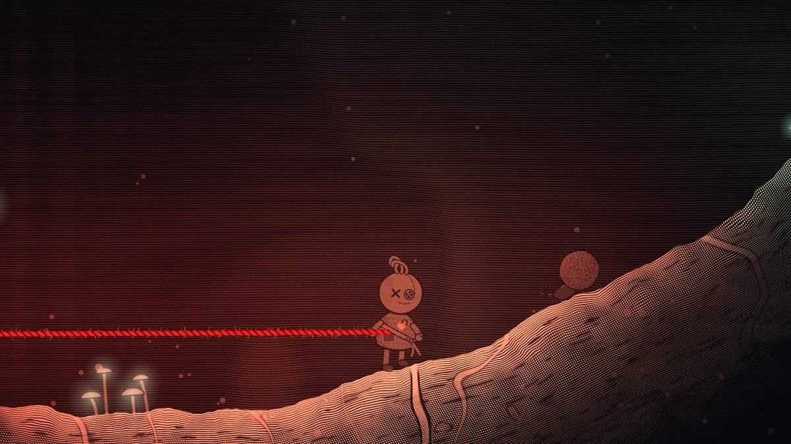
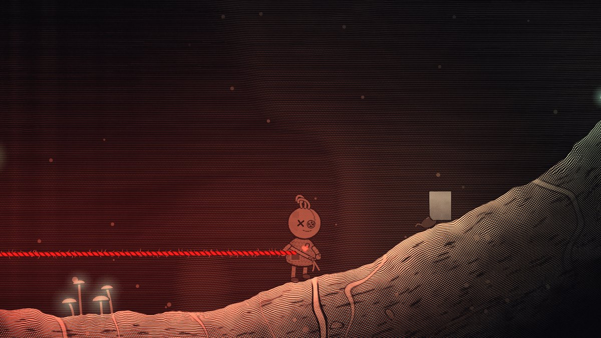
BeforeAfterDrag the thread to compare
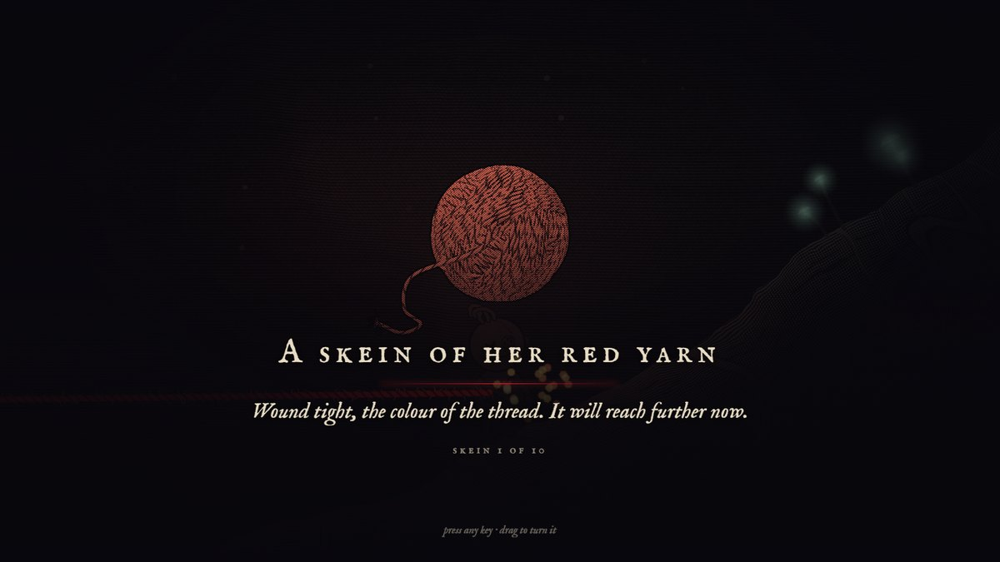
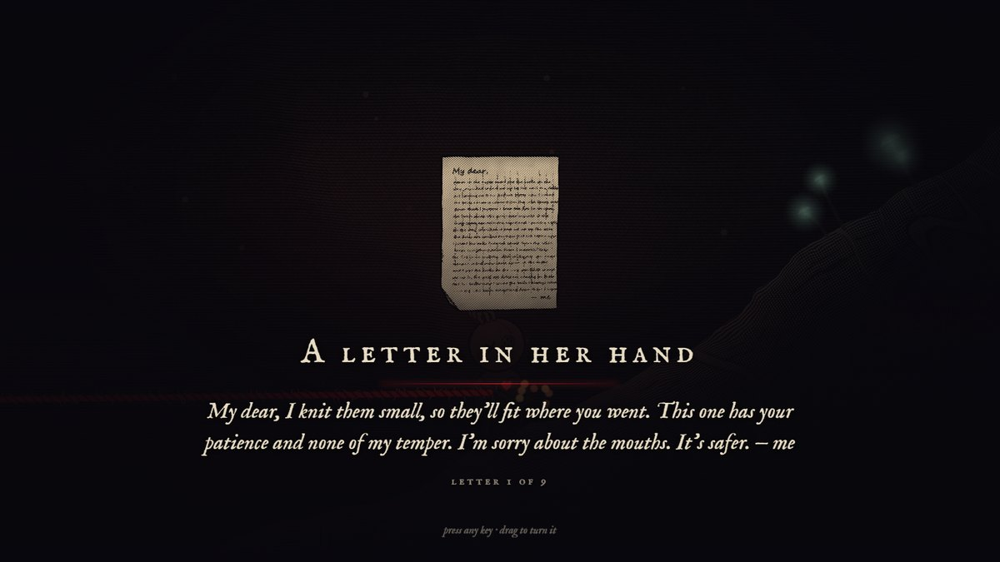
BeforeAfterDrag the thread to compare
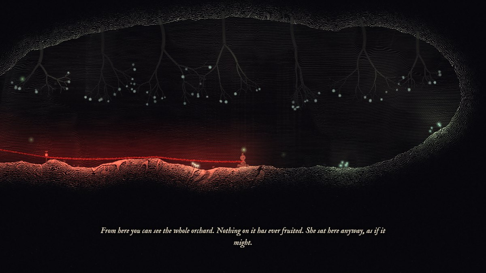
when I bite the thread make the monster scream in panic "WHAT HAVE YOU DONE??" And then immediately run away. Then show one-two screens with thread becoming grey and then how the monster climbs it and falls.
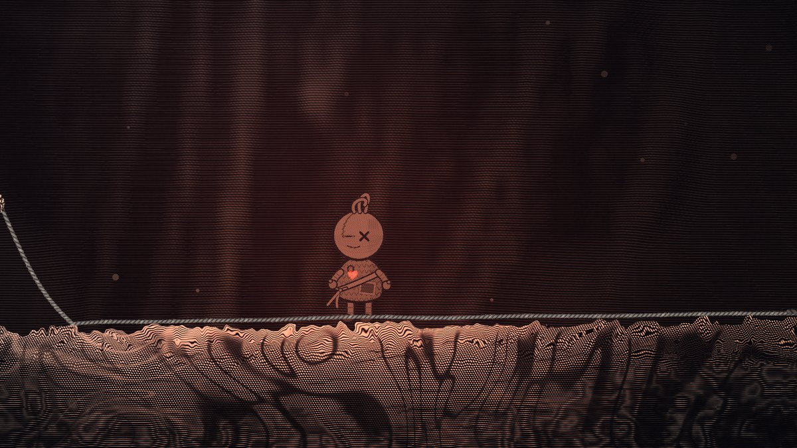
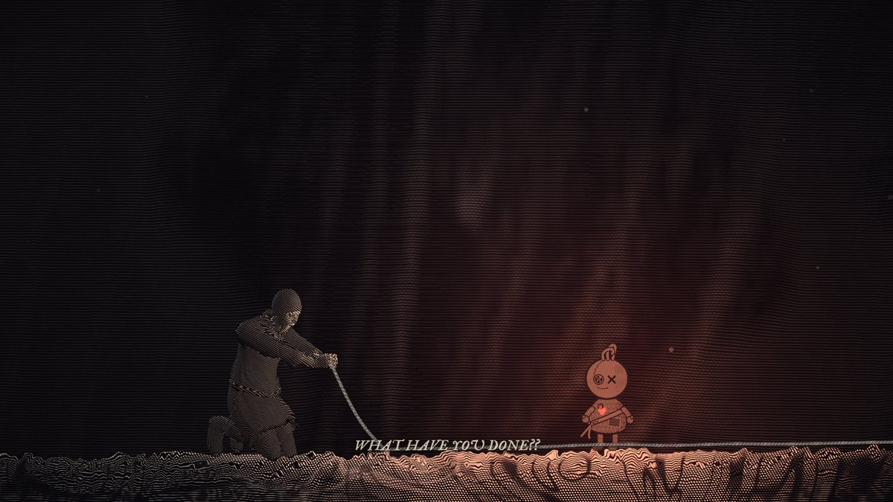
BeforeAfterDrag the thread to compare
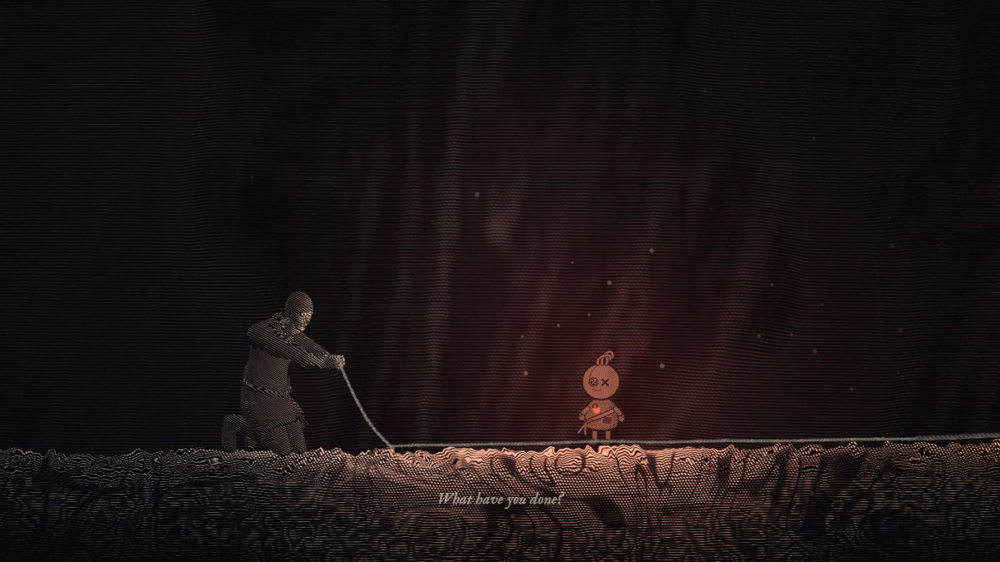
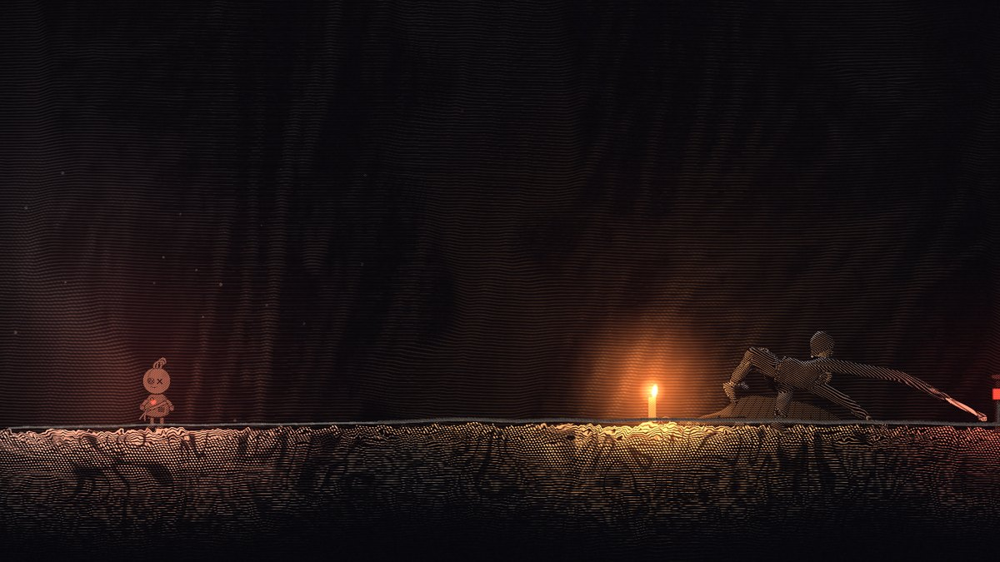
BeforeAfterDrag the thread to compare
scream): her voice with the lower one under it. Of eight takes, the pick was scored for loudness and brightness instead of the slow pace her other lines are scored for, and it is not slowed down. The two old lines (“What have you done?” and “You let go…”) are gone.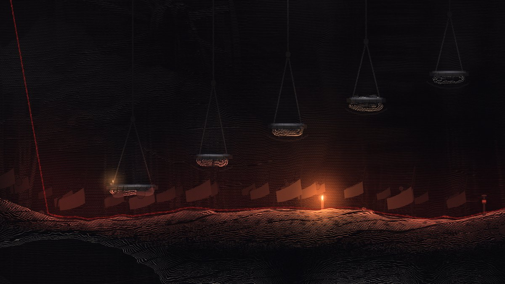
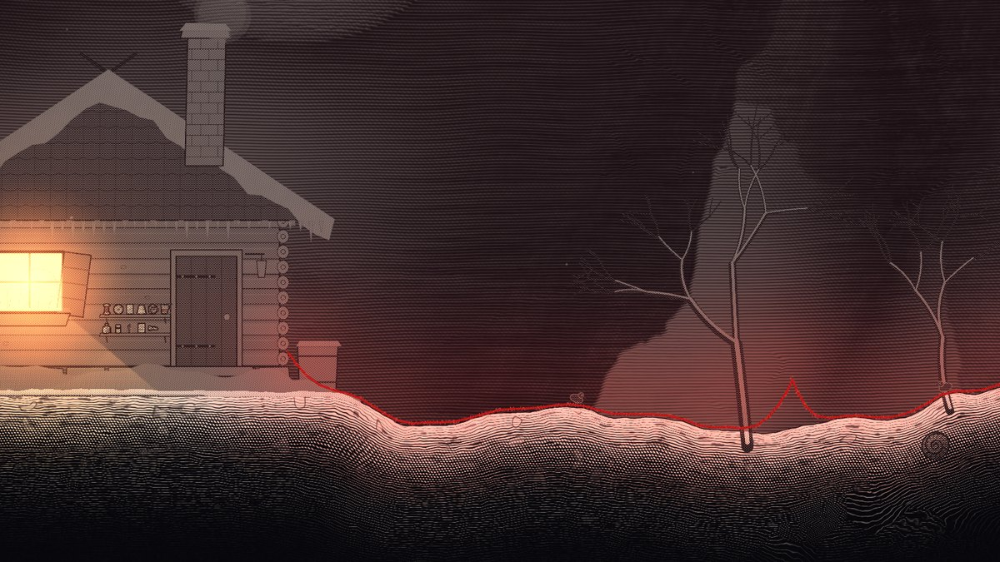
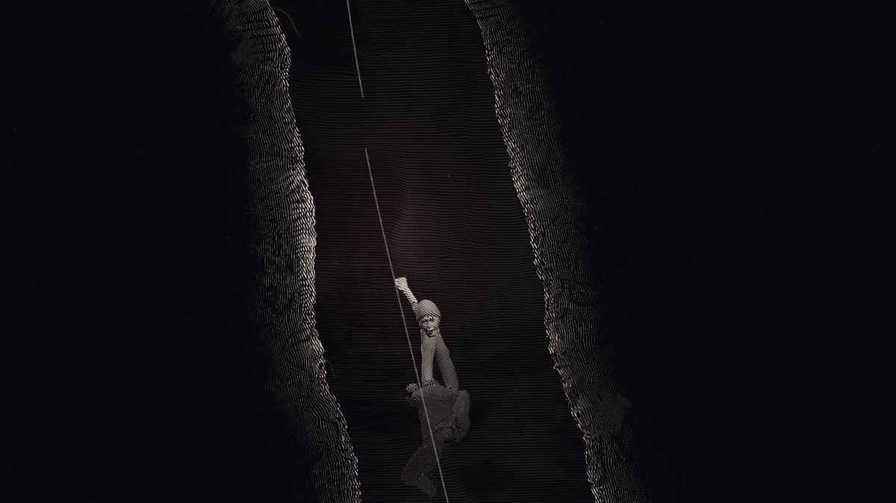
WHOLE, mending, sitting); removed poles never tie; letters picked upoff on ten PEGS; nine SKEINS as letters; REST_SAYS; FINALE.screamsettings.lettersapp/assets/props/letter.*scream, scored by SCREAM; app/assets/voice/scream.ogg